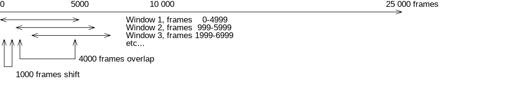

Pond manual¶
Pond application is a driver that uses aquaduct module to perform further analysis of results from Valve calculations.
Pond can calculate pockets present in the protein and free energy profiles of Master paths.
Pond invocation¶
Once aquaduct module is installed (see Aqua-Duct installation guide) properly on the machine, Pond is available as pond.py command line tool.
Usage¶
Basic help of Pond usage can be displayed by following command:
pond.py --help
It should display following information:
usage: pond.py [-h] [-c CONFIG_FILE] [-t THREADS] [-r RESULTS_DIR] [--debug]
[--debug-file DEBUG_FILE] [--paths-types PATHS_TYPES] [--raw]
[--raw-master] [--raw-discard-singletons RAW_SINGL]
[--window-full] [--windows WINDOWS] [--wsize WSIZE]
[--reference-value REF] [--reference-calc]
[--reference-radius REF_RADIUS] [--reference-mol REF_MOL]
[--temperature TEMP] [--gsize GRID_SIZE] [--pockets]
[--hotspots] [--energy-profile] [--master]
[--master-radius MASTER_RADIUS] [--master-ctypes MASTER_CTYPES]
[--io-threshold IO_THRESHOLD] [--path-id PATH_ID]
[--path-file PATH_FILE] [--path-radius PATH_RADIUS]
[--path-smooth] [--raw-path] [--extract-path EXTRACT_PATH]
[--output-file OUTPUT_FILE] [--output-suffix OUTPUT_SUFFIX]
What have I got in my pocket?
optional arguments:
-h, --help show this help message and exit
-c CONFIG_FILE Config file filename. (default: None)
-t THREADS Limit Aqua-Duct calculations to given number of
threads. (default: None)
-r RESULTS_DIR Path to results directory (default: )
--debug Prints debug info. (default: False)
--debug-file DEBUG_FILE
Debug log file. (default: None)
--paths-types PATHS_TYPES
Limit calculations to given paths types, i.e. given
molecules. (default: )
--raw Use raw data from paths instead of single paths.
(default: False)
--raw-master Use raw data from paths instead of single paths, only
in master paths calculations. (default: False)
--raw-discard-singletons RAW_SINGL
Discard short scope only segments from raw data.
(default: 1)
--window-full Return full window if windows is used. (default:
False)
--windows WINDOWS Number of windows to calculate. (default: 1)
--wsize WSIZE Size of window in frames. (default: None)
--reference-value REF
Reference value in [kJ/mol/K]. (default: None)
--reference-calc Calculate reference value with scope and reference
molecules. (default: False)
--reference-radius REF_RADIUS
Radius of reference in [Å]. (default: 2.0)
--reference-mol REF_MOL
Selection of reference molecules. (default: resname
WAT)
--temperature TEMP Simulation temperature in [K]. (default: 300.0)
--gsize GRID_SIZE Size of grid's cells in in [Å]. (default: 1.0)
--pockets Calculate pockets. (default: False)
--hotspots Calculates hotspots if pockets are calculated.
(default: False)
--energy-profile Calculates energy profiles for master paths. (default:
False)
--master Enables master paths calculation. (default: False)
--master-radius MASTER_RADIUS
Calculate profiles for master paths with given radius
in [Å]. (default: 2.0)
--master-ctypes MASTER_CTYPES
Limit calculations to given ctypes. (default: )
--io-threshold IO_THRESHOLD
Percent value of maximal density which will be used to
partition pocket into inner and outer instead of mean
value. (default: None)
--path-id PATH_ID Calculate profiles for specified path ID. (default:
None)
--path-file PATH_FILE
Use coordinates from specified CSV file. (default:
None)
--path-radius PATH_RADIUS
Calculate profiles for path with given radius in [Å].
(default: 2.0)
--path-smooth If used path coordinates will be smoothed. (default:
False)
--raw-path Use raw data from paths instead of single paths. Used
for path energy profiles calculations and for
extracting raw path. (default: False)
--extract-path EXTRACT_PATH
Extract path coordinates with specified ID. (default:
None)
--output-file OUTPUT_FILE
Output CSV filename for extracted coordinates.
(default: path_coords.csv)
--output-suffix OUTPUT_SUFFIX
Arbitrary suffix appended to output filenames.
(default: )
Options common with Valve¶
All options related to Molecular Dynamic simulation data, configuration file, and threads have the same meaning as in Valve.
For detailed explanation of the following options see Valve manual:
-c CONFIG_FILE- Configuration file name. Pond and Valve should use the same file.-t THREADS- Limits Aqua-Duct calculations to given number of threads.--debugand--debug-file- Allows to get debugging information.
Results directory¶
Pond produces many results files, especially if windows options are used. For the sake of convenience,
option -r allows to provide output directory.
If provided directory does not exist it will be created without warning.
Also, Pond will not warn if results files overwrites existing files.
Pond calculations options¶
Other options are used to start or adjust Pond calculations:
- Pockets
Option
--pocketstriggers pocket calculations
- Hot-spots
Option
--hotspotstriggers hot-spot calculations but it also requires--pockets.
- Energy profiles
Option
--energy-profiletriggers free energy profiles calculations for master paths.
Pond’s option --paths-types allows to limit calculations only to paths of certain molecules. For example, --paths-types 'WAT OXY' loads paths of WAT (water molecules) and OXY (oxygen) molecules. All other paths (if any) will not be used.
Free energy estimation¶
Pond can estimate free energy by using calculated density of traced molecules. It becomes particularly useful and relevant when traced molecules include solvent.
Estimation of free energy is done according to Boltzmann inversion. Similar method was used in Rao,S. et al. (doi:10.1080/19336950.2017.1306163) paper.
Following equation relates free energy with density of molecules:
Where z is point in the space, preferably along some kind of path, n(z) is density of molecules in point z, C is a normalization constant, E is free energy, k is Boltzmann’s constant, and T is temperature.
One can easily transform the above equation to calculate energy:
Term \(kT\ln\left(C\right)\) does not depend on z and can be determined by assumption that free energy in the bulk of traced molecules (solvent) is zero.
Please note that option --temperature allows to set desired temperature in Kelvins.
Note
Pond returns energy in kJ/mol SI units.
Bulk reference¶
Value of reference correction can be directly passed to Pond using --reference-value option or can be calculated automatically by analysis of the bulk of traced molecules (solvent) using --reference-calc flag. Following additional options influence calculation of bulk reference:
- Radius of the bulk around COG.
Option
--reference-radiusallows to set the radius of the sphere within which the bulk will be scanned. The sphere is centered in COG. Radius should be selected in such a way that the sphere does not overlaps with other molecules in the simulated system. Default value is 2.0 Å.
- Density of reference molecules.
Once COG if the bulk and radius are setup, Pond scans trajectory and looks for molecules. Option
--reference-molallows to define molecules for which density should be calculated.
Note
If no --reference-value or --reference-calc options are used Pond skips estimation of free energy.
Raw data¶
Two types of data can by used by Pond:
Separate paths (including passing paths if any), or
Raw paths saved at stage II.
By default separate paths are used. Option --raw makes Pond to use raw paths in all calculations,
whereas --raw-master makes Pond to use raw paths only in estimation of free energy profiles and
for pockets and hot-spots separate paths are used.
Note
Best results of pockets calculation can be achieved with separate paths.
Warning
Free energy estimation with separate paths may very likely lead to false results at the borders of the scope.
Windows¶
Pond performs calculations for entire trajectory and/or for user defined windows:
--window-fullensures that results will be calculated for the entire trajectory.--windowsallows to set number of windows.--wsizeallows to change default size of windows.
By default, windows’ sizes are automatically set in such a way that entire trajectory is
covered and windows do not overlap to each other. Option --wsize allows to set size of
windows (in frames), therefore, windows can also overlap with each other or can span only
selected sections of the trajectory.
For example, for 25 000 snapshots long trajectory one can perform calculations in 5000 frames long windows where an overlap of a consecutive window with a next window is 4000 frames long - see following picture:
To calculate proper number of windows evenly spanning trajectory one can use following equation:
Where WINDOWS is a desired number of windows, TOTAL is total length of trajectory, and SHIFT is WSIZE - OVERLAP.
In the above example TOTAL = 25 000, WSIZE = 5 000, SHIFT = WSIZE - OVERLAP = 5 000 - 4 000 = 1 000. Therefore:
And Pond should be called with --windows 21 --wsize 5000 options to get above described windows.
Pockets¶
Pockets are calculated by analysis of paths found by Valve. A regular grid is constructed
spanning all paths. Grid size by default is 1 Å and can be altered with --gsize option.
Note
As for now, it is recommended that multiplicative inverse of grid size is an integer number. Therefore, grid size can be safely set to 1, 0.5, 0.25, 0.1 etc.
Next, number of paths crossing each of the grid cells is calculated over the entire trajectory and divided by the number of frames. This gives averaged density of traced molecules.
Cells with null density are removed from the grid and resulted shape corresponds to maximal area penetrated by traced molecules.
Note
If no estimation of free energy is performed values returned for pockets and hot-spots are density (of traced molecules).
Warning
Estimation of free energy for pockets calculated for non raw data may be unreliable.
Inner & outer pocket¶
Distribution of densities in the grid has positive skew. This suggest that pocket can be partitioned into areas of different overall distribution of traced molecules.
Indeed, Pond saves two types of pockets depending on the distribution of densities in the grid:
- Inner pocket
This is part of the pocket for which densities are greater than mean value.
- Outer pocket
This is counter part for Inner pocket, i.e. the part of the pocket for which densities are less than mean value.
Hot-spots¶
Further analysis of distribution of densities in the grid allows to select points of the highest densities. They are considered as hot-spots, i.e. points of particular importance at which traced molecules are attracted or trapped and stays for considerably long time.
Currently hot-spots are detected as far right tail of the distribution of densities in the grid.
Energy profiles¶
Pond estimates energy profiles of master paths.
For each point of the master path density of paths of traced molecules is calculated within
sphere of radius set by --master-radius option.
Option --master-ctypes allows to select master paths ctypes for which free energy estimation is
calculated.